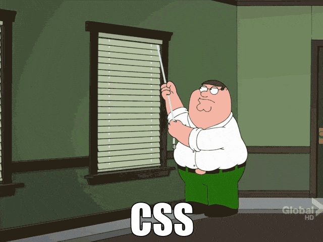
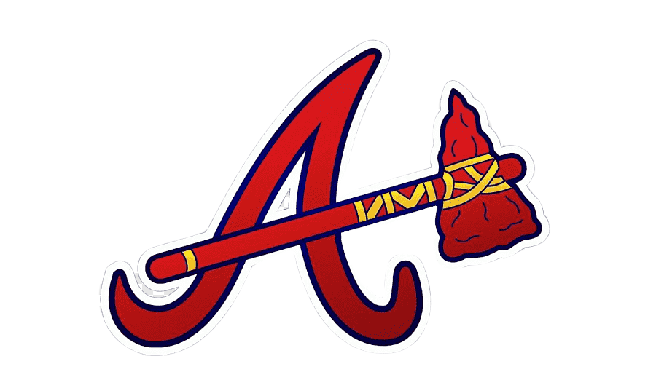
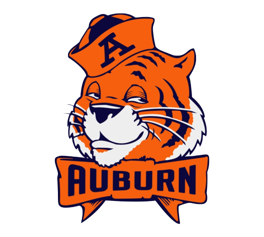
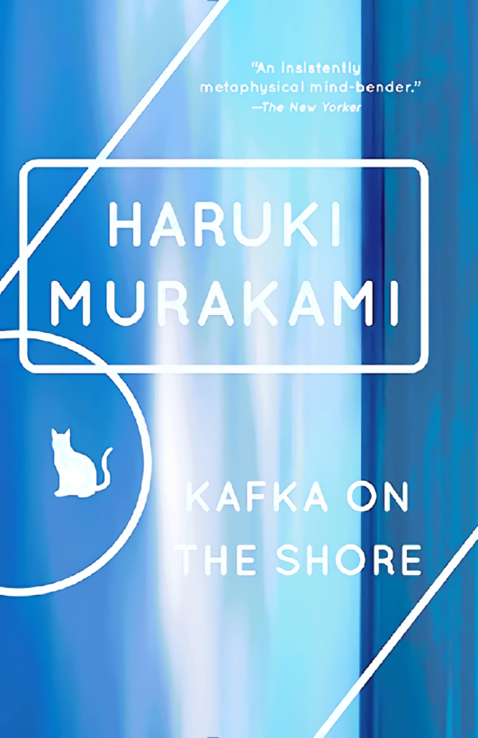
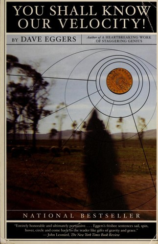
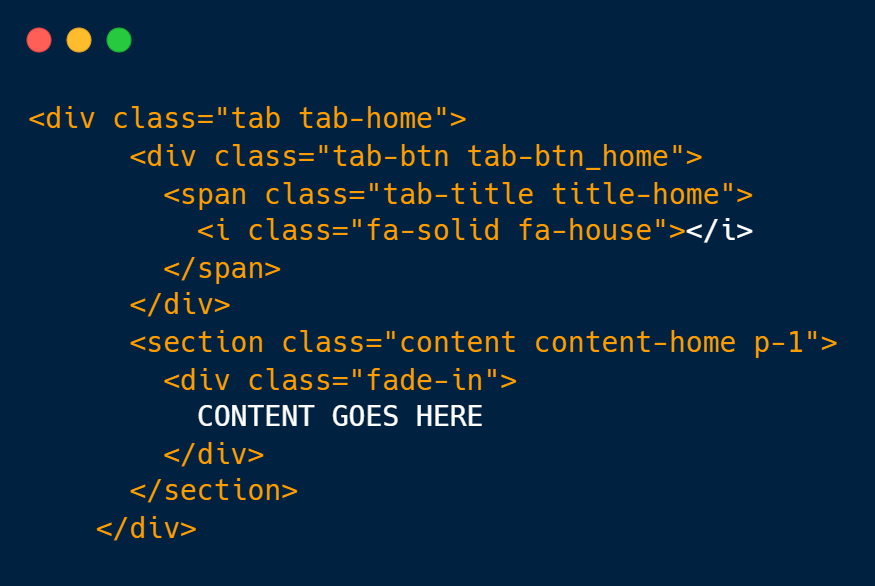
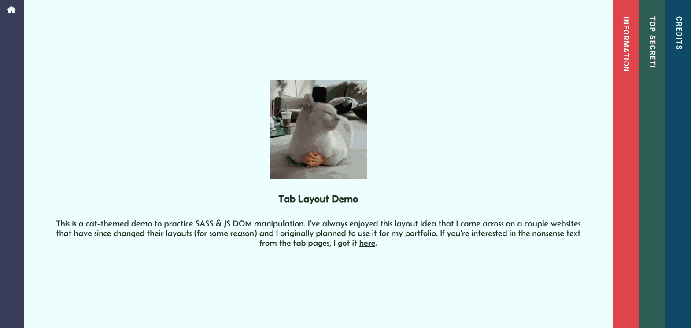
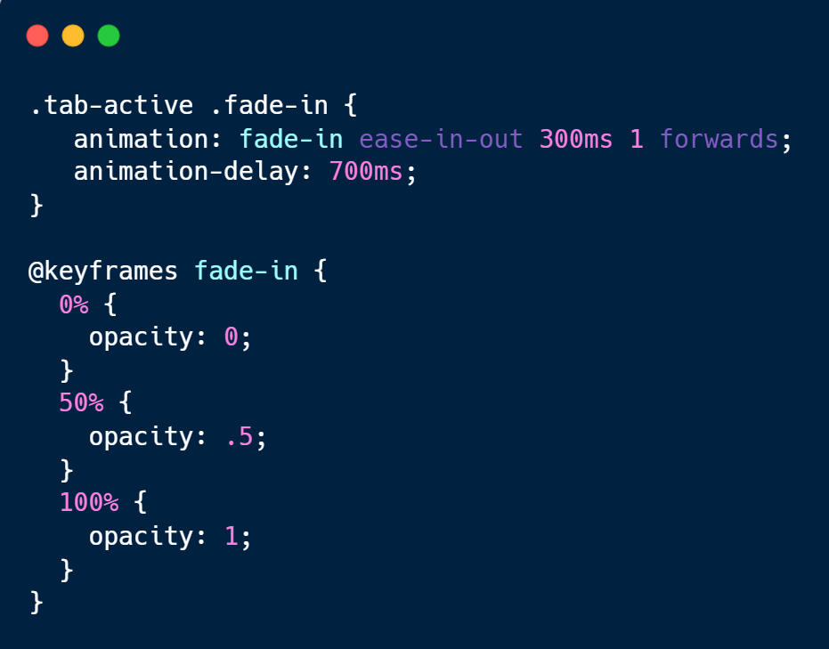

Hello fellow humans (& spam bots), my name is Wade Edwards and I am Software Developer and you, you lucky duck, have stumbled upon my blog site thingy. I made this for fun and to practice my non-existant writing skills. I'll write about tech stuff and maybe the occasional non-tech related thought that occupies my brain. So kick back, relax, and enjoy some tunes while you read my mind.
Wade Edwards [ED WAYD-WERDZ]
A little too much about me: When I'm not coding, many other things capture my interest, and I'll feature some of them here. But if you just came for the writing here are some of the blog posts I've written.
I currently am looking for a new developer gig but my past job was as a freelance developer & I created a site for the East Tennessee Relic & Coin Hunters
Coding
I am a self-taught / community-taught developer. I believe in having passion for your craft and attention to detail. Currently I am a frontend and email developer but I am beginning to learn the MERN stack to become Full Stack.
I use Javascript, SASS & Bootstrap. CSS is really my strong suit. I took to it right away so I've been confused by the hate it gets in tech circles.

can't relate (maybe sometimes lol)
Fitness
I try to stay in shape, I enjoy yoga, mobility training, running, and alot of just weird exercises to try to maintain and hopefully improve my athleticism. I don't enjoy strength training but I do it anyway.
Books, Movies & Sports
I really enjoy so many types of movies, it's one of the few things I'm not picky about. I like everything from the Studio Ghibli films to MCU, Harry Potter, foreign films, Star Wars & I especially love 80's cinema.
I am a huge sports nerd and have been for as long as I can remember. It was truly my first love.


Some of my favorite books are as follows:

Kafka on the Shore
by Haruki Murakami
Lincoln in the Bardo
by George Saunders

You Shall Know Our Velocity!
by Dave Eggers
The Memory Police
by Yoko Ogawa
The Dharma Bums
by Jack Kerouac
A Wild Sheep Chase
by Haruki Murakami
Cooking
This is a newer hobby but I've really jumped into it. I basically was illiterate around an oven until I just started googling recipes and going for it. Only some of what I've cooked has been horrible.
My Writing
Tab Layout Demo: How to code this fun design.
July 7, 2023 | Wade Edwards
The cat theme is probably the best part...
Hello World, and welcome to my first blog post.
Today I am going to explain how I made this layout with the different sections living inside tabs that expand on click.
To begin with, all of your HTML should be wrapped in a container div with the flex property applied. This is puts the tabs side-by-side and will be key for responsiveness. Next up, we have to figure out what to do with the content inside the tabs.
Your HTML should look something like this:

We're going to take our .content class and set it to display: none so that we are only left with the tabs alognside each other.
Now we can go to work on the colored tabs with the class of .tab. Set the height and width, I used 100vh height and 60px for width but this can vary based on personal choice. The .tab-btn has the same height and width and the background-colors applied. The .tab-title has a rotate: 90deg set on them. I used span tags so I had to also apply display: block for the transform to take effect.
Now, let's get the tabs working.

Smooth transitions made via CSS keyframes
To do this, our width on the .tab-btn will come back into play. Along with some JavaScript classes. We will need to apply a class on the tabs with a JS event listener.
First, we set the .tab-active class to the home tab. This make sure the inner content of the home tab is visible on page load. Next up, we loop through our tabs and add the click event listener and have it check for the class. It removes the class where applied (home-tab by default) and then adds the class on the tab that has been clicked.
Now we use the active class in our CSS to put on the finishing touches. Start by adjusting the tab width. Remember, I used 60px as a default on the .tab class. Here we will select the .tab-active and add width: calc(100% - 180px). This takes 100% and subtracts the width of the three inactive tabs. If you set your tabs to 40px you may need to adjust your calc. Now we target the .content class and select it with the active class. .active-tab > .content and set the content to display: flex. This will get the content to show for only the selected tab that has the active class applied.
One last thing, your content will come in looking very clunky so let's animate it for a more smooth transition. This is where the .fade-in class finally comes into play. We will set opacity: 0 to the class. It is inside the content class that is set to display: none, but since we can't animate the display property, we will animate the fade-in container class with CSS keyframes.

This will make the content fade in and out smoothly after the tabs have expanded and retracted.
I hope you've enjoyed this tutorial. I plan to make more in the future.